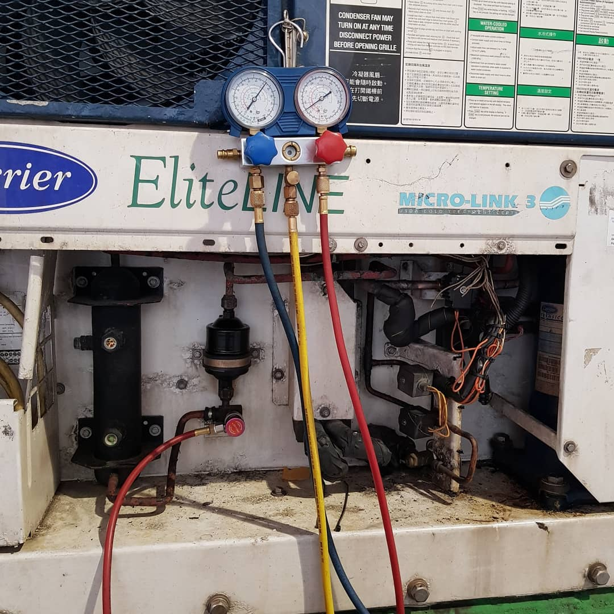
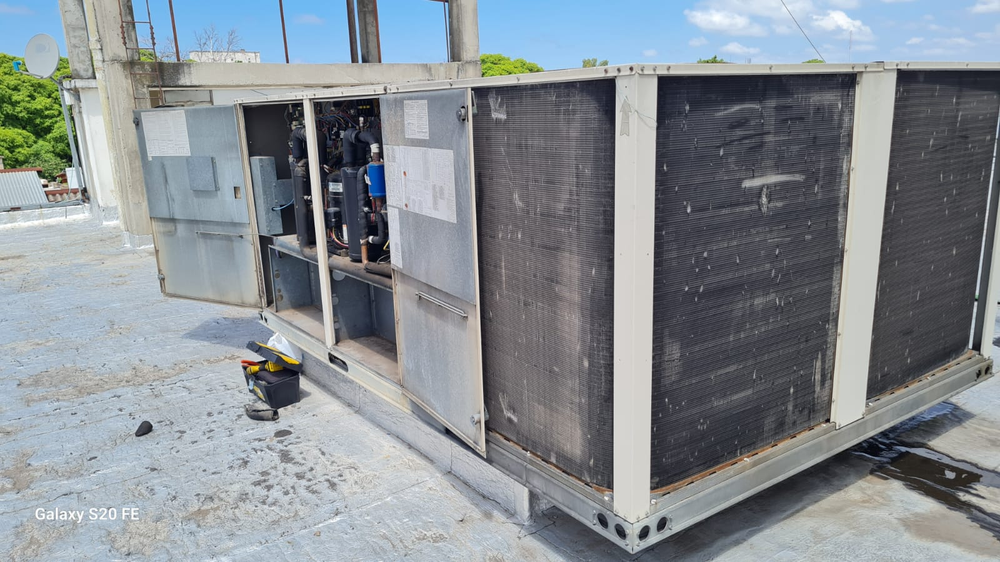
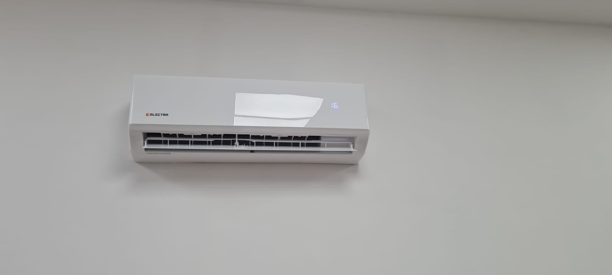
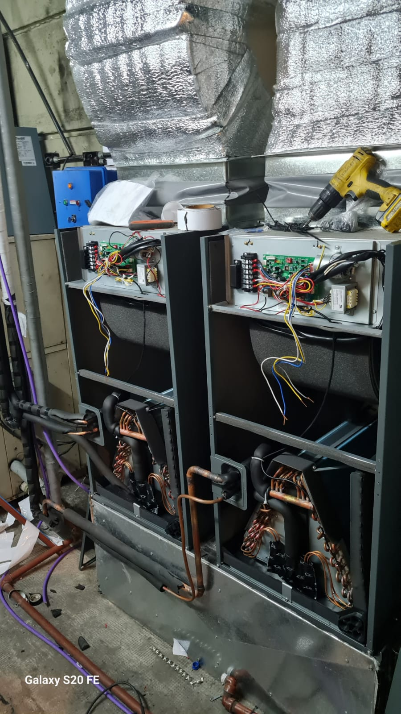

Climatizacion
Instalacion, adecuacion y puesta en marcha de sistemas de aire acondicionado para espacios comerciales, salas tecnicas y ambientes productivos.
Refrigeracion y climatizacion integral
C.P. Termomecanica integra instalaciones comerciales, industriales, domiciliarias y de precision con servicio tecnico, automatizacion y telemetria.
Servicios
Desde el relevamiento inicial hasta el soporte preventivo, el foco esta puesto en continuidad operativa, eficiencia energetica y trazabilidad tecnica.
Instalacion, adecuacion y puesta en marcha de sistemas de aire acondicionado para espacios comerciales, salas tecnicas y ambientes productivos.
Planes preventivos, diagnostico de fallas, reparaciones y seguimiento de condiciones para reducir paradas imprevistas.
Dispositivos conectados, telemetria, eventos y alarmas para visualizar temperatura, corriente, estado e historial de equipos.
Campos de aplicacion
Atendemos desde el confort cotidiano hasta instalaciones donde la temperatura y la continuidad operativa forman parte critica del proceso.

01
Plantas de agua helada, chillers, procesos y equipos de gran capacidad.

02
Rooftop, sistemas centrales y climatizacion para locales, oficinas y edificios.

03
Instalacion, mantenimiento y reparacion de equipos split e inverter.

04
Control estable y continuo para centros de datos, telecomunicaciones y salas tecnicas.
Climatizacion y refrigeracion
Trabajamos sobre equipos de expansion directa, sistemas centrales, unidades de precision, tableros asociados, sensores y controles, cuidando tanto la capacidad frigorifica como la condicion electrica y mecanica.
Alarmas: sin eventos criticos
Control, automatizacion y telemetria
C.P. Termomecanica tambien desarrolla soluciones conectadas para equipos en campo. La primera etapa del sitio es publica; mas adelante, el portal de clientes permitira consultar equipos autorizados por el backend.
Empresa
C.P. Termomecanica acompana instalaciones donde el clima, la refrigeracion y el mantenimiento no son detalles: son parte del funcionamiento diario del negocio.
La combinacion de experiencia de campo, diagnostico tecnico y desarrollo propio permite evolucionar desde el servicio tradicional hacia una operacion monitoreada y medible.
Contacto
Podemos relevar instalaciones existentes, planificar mantenimiento o preparar una solucion de telemetria para equipos criticos.
El acceso de clientes quedo reservado para la proxima etapa. La autenticacion y autorizacion se resolveran desde el backend.